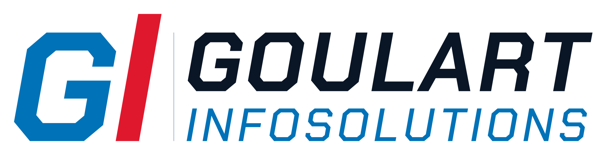
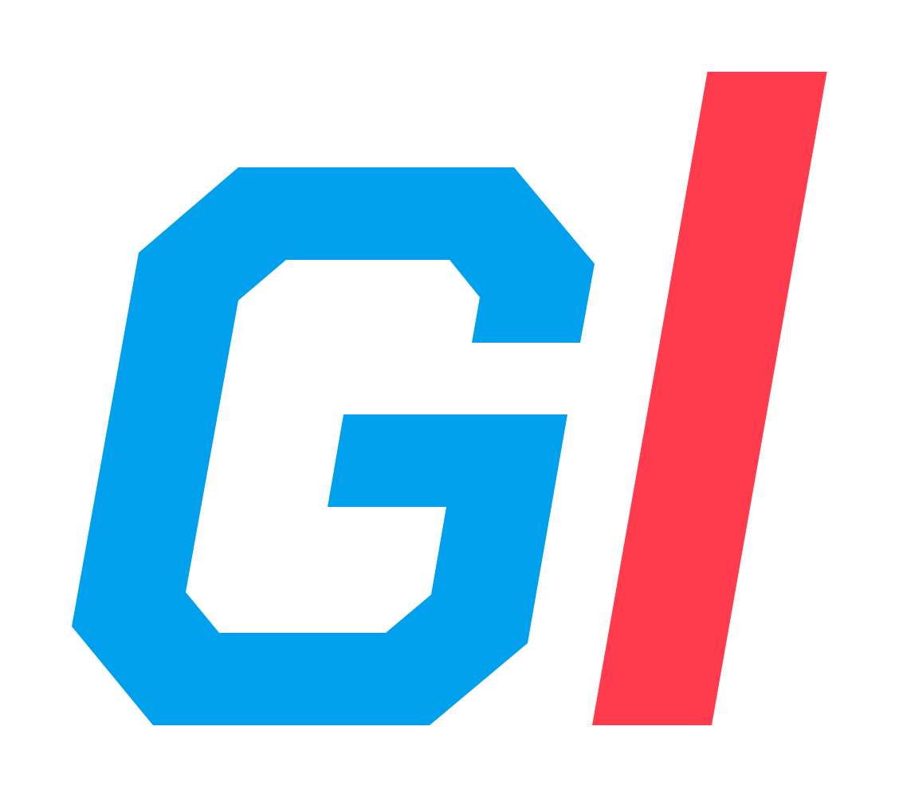
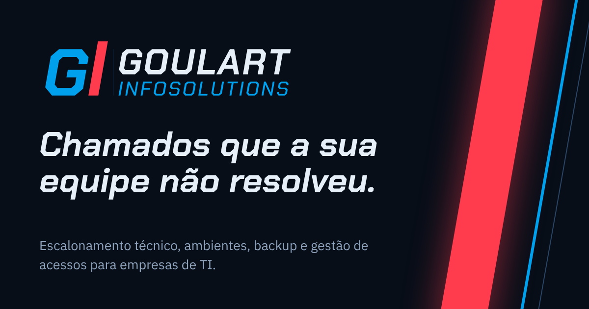
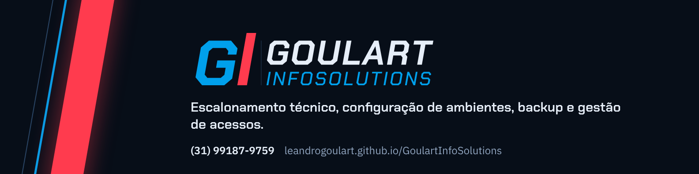

Manual de marca
Como a Goulart InfoSolutions aparece: marca, cor, tipografia, voz e aplicações. Versão 1.0, novembro de 2026.
Marca
O monograma junta o G de Goulart a uma barra vermelha. A barra sobe acima da linha das letras: é o chamado que sai da equipe e escala. A mesma inclinação de 10 graus aparece no site, nos marcadores e nas peças.
Versão principal, sobre Abismo ou Casco.

Sobre fundo claro. Azul e vermelho mais escuros para manter contraste.

Monograma, para avatar, favicon e espaços quadrados.

Uma cor só, para carimbos, bordados e fundos fotográficos. Há versão escura em logo/.
Espaço e tamanho
| Espaço livre | Metade da altura do G em todos os lados. Nada de texto, borda ou imagem dentro dessa área. |
|---|---|
| Tamanho mínimo | Marca horizontal: 140 px de largura em tela. Monograma: 16 px. |
| Arquivos | SVG em brand/logo/. PNG prontos em brand/png/. Os textos já estão convertidos em curvas: não dependem de fonte instalada. |
Não faça
Trocar as coresO G é azul e a barra é vermelha. Barra azul ou G vermelho desmonta a ideia.
Esticar ou inclinar de novoA inclinação já está no desenho. Proporção sempre travada.
Aplicar brilho ou sombraO neon fica nas peças de apoio. O logotipo é sempre chapado.
Redigitar o nome em outra fonteUse sempre os arquivos. O nome do logotipo é desenho, não texto.
Cor
Um fundo profundo, um azul de sinal e um vermelho que só aparece onde algo precisa de atenção. Os contrastes abaixo foram calculados pela fórmula da WCAG 2.2.
#070E18
Fundo base. Névoa sobre Abismo: 16,5 para 1.
#0E1A2B
Cartões e áreas elevadas. Névoa sobre Casco: 14,9 para 1.
#00A0EC
Azul da marca. Botões, números, o G. Sobre Abismo: 6,7 para 1.
#4CC3FF
Texto azul pequeno e foco de teclado. Sobre Abismo: 9,7 para 1.
#FF3B4E
A barra do I e o ponto em que algo escala. Sobre Abismo: 5,5 para 1.
#E6EEF8
Texto principal sobre fundo escuro.
#8FA3BD
Texto secundário. Sobre Abismo: 7,5 para 1.
#2B4666
Divisores e bordas. Nunca como cor de texto.
Sobre fundo claro
| Azul | #0072B8 | 5,1 para 1 sobre branco |
|---|---|---|
| Vermelho | #E0182D | 4,8 para 1 sobre branco |
| Tinta | #0A1626 | 18,2 para 1 sobre branco |
Regras de uso
- Proporção aproximada de cada peça: 80% Abismo e Casco, 15% Névoa e Bruma, 5% Sinal e Escalonamento.
- O vermelho aparece uma vez por tela como ponto de atenção, além do logotipo.
- Brilho (glow) só no vermelho e só em momentos de ênfase, como o cartão do hero.
Tipografia
Duas famílias com papéis distintos. Ambas são livres (licença OFL) e estão hospedadas no próprio site, sem chamada a serviços externos.
Chakra Petch
Títulos, marca, botões e rótulos curtos. Itálico 700 nos títulos, 600 nos subtítulos e nos botões.
ABCDEFGHIJKLMNOPQRSTUVWXYZ abcdefghijklmnopqrstuvwxyz 0123456789 ãçéõ
IBM Plex Sans
Texto corrido, tabelas e interface. Pesos 400, 500 e 600. Linhas de até 62 caracteres.
ABCDEFGHIJKLMNOPQRSTUVWXYZ abcdefghijklmnopqrstuvwxyz 0123456789 ãçéõ
| Título principal | Chakra Petch 700 itálico, 40 a 72 px, entrelinha 1,05 |
|---|---|
| Título de seção | Chakra Petch 700 itálico, 30 a 48 px, precedido pela barra vermelha inclinada |
| Subtítulo | Chakra Petch 600, 20 px, sem itálico |
| Texto | IBM Plex Sans 400, 17 px, entrelinha 1,6 |
| Frases | Sempre em caixa normal. Sem títulos em maiúsculas. |
Voz
O leitor é um coordenador ou gerente de uma empresa de TI. Ele quer saber o que será feito, quando e o que recebe. A voz é direta, em primeira pessoa quando fala de quem atende, e específica.
Escreva assim"Correção aplicada e relatório com causa, ação e estado final."
Não assim"Soluções inovadoras de ponta para transformar o seu negócio."
Escreva assim"Alocação por demanda ou por período, como pessoa jurídica."
Não assim"Parceiro estratégico para a sua jornada digital."
Compromissos de conteúdo
- Cada afirmação precisa de algo que a sustente: um entregável, uma credencial verificável ou um projeto público.
- Nada de SLA, disponibilidade ou prazo prometido sem contrato. A marca promete escopo claro e relatório.
- Credencial só entra com documento que o cliente possa conferir.
- Nomes de clientes não aparecem no site nem nas peças sem autorização por escrito.
- Exemplos ilustrativos são sempre marcados como exemplo.
Aplicações
Peças prontas. Os arquivos-fonte em HTML ficam em brand/applications/ e geram os PNG com um comando.

Preview de link (1200 × 630). Aparece quando o site é compartilhado.

Banner de página de empresa no LinkedIn (1584 × 396).
Assinatura de e-mail
Arquivo pronto em brand/applications/assinatura-email.html. Abra no navegador, selecione a assinatura e cole nas configurações do seu e-mail.